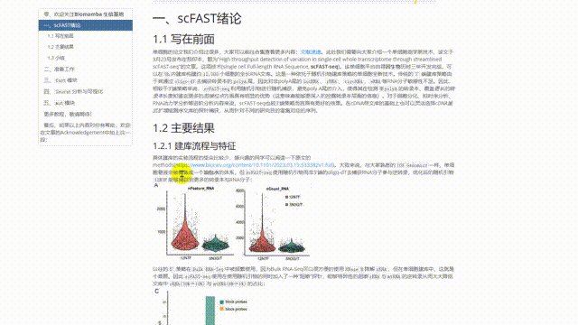

scFAST分析| 05.mut模块
原文：https://mp.weixin.qq.com/s?__biz=MzAwMzIzOTk5OQ==&mid=2247504878&idx=1&sn=2c5d9fc694eaf3e264c38b0691cd3a43&chksm=9b3caabeac4b23a87d201009137572c02ba1ea0dd747bcd8b8c02878b45917b6e235551c41cb#rd 合集：单细胞教程全收录
mut模块


与以往的教程一样，我们给大家准备了数据分析的学习手册，目前分为scFAST绪论、准备工作、fast模块、Seurat分析与可视化、mut模块等五节内容(更多章节持续创作中)及对应测试文件，大家可以添加企业微信回复关键字"scFAST学习手册 "即领:

5.1 简介
该模块用于分析panel数据或者全序列数据中的 变异信息 ，可以说是scFAST的特色分析模块。在该模块中，对可靠的突变位点会给出位点所在cluster、 barcode等信息，所以需要提供rds文件(即我们上一步中存出的scFAST_fast.rds文件)，因此，需要先利用seeksoultools等软件进行定量、分群之后再用此模块进行变异检测。panel的分析也是使用该模块完成的。
5.2 模块工作流程

突变检测模块流程示意图
在将整体数据变异位点到单细胞维度时，利用了bam文件中每条reads的barcode和UMI信息。流程默认将 非同义突变 过滤，并且基于链偏好性对突变进行再一次的过滤。
我们使用 SOR（Symmetric Odds Ratio）值评估链偏好性。snv小于1.0、indel 默认小于10.0的所有位点进行reads统计，并且每个位点可给出一个中间文件（该文件生成与否根据_tmptype_参数设定），如下
BC_UMI BKGD/CB coverage alt ref1 ref2 alt1 alt2
CGTAGTACGAGCACGAA_CCCGCTTTCCTT cell 35 0 0 35 0 0
TGATCAGATGGTAACAC_ACTCCTTTCCAT cell 34 1 0 33 0 1
AGGATAATACACTACGA_CTGTCGATCCTT background 1 1 0 0 0 1
该文件记录突变位点中每一条UMI的ref alt reads数量，并依据此对位点进行了过滤，过滤条件如下：
（1）只有符合alt/coverage>=0.9(altvaf参数值)且coverage reads>=2(UMIreads参数值)的UMI才被认为是支持突变的UMI；
（2）支持突变的UMI数目>=2(umiint参数值)；
（3）支持突变的barcode数目>=2(bcint参数值)；
（4）位点总突变reads>=2(ADint数值)；
（5）位点覆盖reads>=2(DPint参数值)；
（6）snv的sor值<=1.0 indel的sor<=10.0(sorcut参数值) ；
（7）ExAC数据库中eas和All频率小于0.01；
（8）突变的vaf(alt reads/coverage reads) > 0.03 。经过如上8个步骤过滤的位点认为是最终的突变位点。
5.3 运行mut模块
5.3.1 输入文件准备
panel原始fastq数据（clean data；需要自行用fastp等软件处理下机数据）
-
STAR软件 可以选择本软件环境中的
STAR，也可以用外部STAR -
基因组fasta文件
-
STAR软件的参考基因组索引文件 需要注意STAR软件版本兼容问题 -
全序列数据（非panel数据） 处理得到的表达矩阵进行降维分群之后的文件，即我们上文保存的
scFAST_fast.rds文件 -
panel的bed文件 -
annovar软件及其
database可见2.3.3部分
5.3.2 运行mut模块
参数解释：
-
--fq1 panel R1 fastq数据路径。
-
--fq2 panel R2 fastq数据路径。
-
--genomeDir STAR软件构建的索引文件，注意需要与STAR软件版本兼容。
-
--star_path STAR软件的路径。
-
--fasta 参考基因组的fasta文件。注意，fasta文件的染色体名称需要与genomeDir的染色体名称保持一致。
-
--samplename 样本名称。
-
--outdir 结果目录。
-
--rds 全序列RNA表达矩阵的rds文件。
-
--annovarpl 下载的annovar软件路径。
-
--annovardb 下载的annovar数据库路径。
-
--ref 参考基因组版本。
-
--cellanno seurat_clusters或者CellType，默认为seurat_clusters，当rds文件是经过手动注释之后的rds文件时，将meta data细胞类型列命名为CellType，并将此参数设置为CellType。
-
--filted fsys。默认只保留非同义突变。
-
--tmptype 参数值为allreads时，每个位点在BC_UMI_reads_tmp路径下生成一个记录详细reads数目的文件。该参数值默认为txt，即不生成详细的文件。
-
--panel：panel的bed文件。此参数时，只对bed区间内进行变异检测，当不指定此参数的时候，会对全部reads进行变异检测。
# 任务比较大，将其丢到后台运行
nohup seeksoultools mut run \
--fq1 /home/biomamba/analysis/xunyin/test_data/cellline_test/cellline_R1_001.clean.fastq.gz \
--fq2 /home/biomamba/analysis/xunyin/test_data/cellline_test/cellline_R2_001.clean.fastq.gz \
--genomeDir /home/biomamba/analysis/xunyin/my_refference/hg38/ \
--fasta /home/biomamba/ext_data2/analysis/xunyin/my_refference/hg38/hg38.fa \
--samplename cellline \
--outdir /home/biomamba/analysis/xunyin/cell_line_mutout \
--rds /home/biomamba/analysis/xunyin/scFAST_out/scFAST_fast.rds \
--annovarpl /home/biomamba/ext_data2/analysis/xunyin/annovar/table_annovar.pl \
--annovardb /home/biomamba/ext_data2/analysis/xunyin/annovar/humandb \
--ref hg38 \
--filted fsys \
--cellanno celltype \
--core 4 2>&1 > mut.log &
5.3.3 输出结果
输出路径中包含的文件为：
tree cell_line_mutout
## [01;34mcell_line_mutout[00m
## ├── celllinebarcodelist.xls
## ├── [01;34mmutation_umap[00m
## │ ├── cellline_add_snv.rds
## │ └── [01;34mSNV_diff[00m
## │ ├── cellline_snv_markers.xls
## │ ├── [01;34mCelltype_A[00m
## │ │ ├── ANLN_chr7-36407745_-_TCT.png
## │ │ ├── ANP32E_chr1-150226713_T_C.png
## │ │ ├── CANX_chr5-179708267_G_T.png
## │ │ ├── CANX_chr5-179726685_A_G.png
## │ │ ├── CPPED1_chr16-12704775_C_G.png
## │ │ ├── CYBA_chr16-88643516_G_C.png
## │ │ ├── DBN1_chr5-177466941_C_T.png
## │ │ ├── FH_chr1-241497970_C_A.png
## │ │ ├── FUS_chr16-31190121_G_A.png
## │ │ ├── H2AC14_chr6-27814513_C_G.png
## │ │ ├── HLA-B_chr6-31356259_T_G.png
## │ │ ├── KIFBP_chr10-69000515_T_C.png
## │ │ ├── KRAS_chr12-25245351_C_T.png
## │ │ ├── NAMPT_chr7-106261662_T_C.png
## │ │ ├── NCOA4_chr10-46010599_C_T.png
## │ │ ├── NUDT3;RPS10-NUDT3_chr6-34293496_T_G.png
## │ │ ├── PCNT_chr21-46334596_A_G.png
## │ │ ├── PMPCB_chr7-103298662_G_A.png
## │ │ ├── PPP4R2_chr3-73065058_C_G.png
## │ │ ├── RALY_chr20-34077059_-_AGC.png
## │ │ ├── REST_chr4-56930473_T_C.png
## │ │ ├── SPTBN1_chr2-54643117_C_A.png
## │ │ ├── TBC1D23_chr3-100296189_C_A.png
## │ │ └── UNC93B1_chr11-67999234_G_A.png
## │ ├── [01;34mCelltype_B[00m
## │ │ ├── ARL6IP1_chr16-18794662_A_G.png
## │ │ ├── BAG3_chr10-119670133_G_A.png
## │ │ ├── CAP1_chr1-40070169_A_T.png
## │ │ ├── CCNDBP1_chr15-43191645_T_C.png
## │ │ ├── CCT8_chr21-29067014_C_T.png
## │ │ ├── CDCA5_chr11-65079463_C_T.png
## │ │ ├── CYBA_chr16-88647125_T_G.png
## │ │ ├── CYP1B1_chr2-38071060_G_C.png
## │ │ ├── DDX3X_chrX-41343348_A_C.png
## │ │ ├── DHX33_chr17-5461073_A_G.png
## │ │ ├── EEFSEC_chr3-128153739_G_A.png
## │ │ ├── GART_chr21-33534717_C_A.png
## │ │ ├── GART_chr21-33534718_A_T.png
## │ │ ├── HAVCR1_chr5-157052561_A_G.png
## │ │ ├── HMGA1_chr6-34243515_-_A.png
## │ │ ├── INO80_chr15-41079889_T_C.png
## │ │ ├── LRRC8D_chr1-89933402_A_G.png
## │ │ ├── MRPS7_chr17-75261947_C_T.png
## │ │ ├── PCIF1_chr20-45940563_G_A.png
## │ │ ├── PLD3_chr19-40378055_G_A.png
## │ │ ├── PLOD1_chr1-11965543_C_T.png
## │ │ ├── POLR1A_chr2-86089889_C_G.png
## │ │ ├── PPP4R3B_chr2-55617200_G_A.png
## │ │ ├── RRBP1_chr20-17616749_C_T.png
## │ │ ├── SERINC1_chr6-122451991_T_G.png
## │ │ ├── VPS35L_chr16-19699568_C_T.png
## │ │ ├── WASHC1_chr9-17843_C_A.png
## │ │ ├── WASHC1_chr9-18081_G_A.png
## │ │ ├── WASHC1_chr9-18143_C_T.png
## │ │ ├── WASHC1_chr9-18481_T_C.png
## │ │ ├── ZNF180_chr19-44479350_G_C.png
## │ │ ├── ZNF280A_chr22-22515221_G_T.png
## │ │ └── ZSCAN25_chr7-99619904_G_A.png
## │ └── [01;34mCelltype_C[00m
## │ ├── ACIN1_chr14-23079588_-_ACGTGA.png
## │ ├── CCAR2_chr8-22615709_G_T.png
## │ ├── CCDC34_chr11-27350364_G_T.png
## │ ├── CCDC74B_chr2-130141240_G_A.png
## │ ├── CDC20_chr1-43362992_G_A.png
## │ ├── DFFA_chr1-10469269_A_G.png
## │ ├── EGLN2_chr19-40807854_C_T.png
## │ ├── EIF3A_chr10-119051224_T_A.png
## │ ├── FAM185A_chr7-102751727_A_G.png
## │ ├── FBXO22_chr15-75904057_C_T.png
## │ ├── HDLBP_chr2-241256379_C_A.png
## │ ├── KIAA0100_chr17-28643219_C_A.png
## │ ├── KMT2D_chr12-49032947_GCT_-.png
## │ ├── LSM12_chr17-44038092_T_C.png
## │ ├── MDC1_chr6-30713191_C_T.png
## │ ├── MRPL20_chr1-1402212_G_C.png
## │ ├── NDUFC2;NDUFC2-KCTD14_chr11-78073109_-_A.png
## │ ├── NEK9_chr14-75124193_C_T.png
## │ ├── NFE2L2_chr2-177231803_G_C.png
## │ ├── NR1H2_chr19-50378574_-_CAG.png
## │ ├── PKP3_chr11-397348_A_G.png
## │ ├── PUS7_chr7-105508236_A_G.png
## │ ├── RAB5B_chr12-55992132_GGA_-.png
## │ ├── RTN3_chr11-63758191_-_A.png
## │ └── TSR2_chrX-54444542_A_G.png
## ├── [01;34mSTAR[00m
## │ ├── cellline_Aligned.out.bam
## │ ├── cellline_Aligned.sortedByCoord.out.bam
## │ ├── cellline_Aligned.sortedByCoord.out.bam.bai
## │ ├── cellline_Log.final.out
## │ ├── cellline_Log.out
## │ ├── cellline_Log.progress.out
## │ ├── cellline_SJ.out.tab
## │ └── [01;34mcellline__STARtmp[00m
## │ ├── readFilesIn.info
## │ ├── [01;32mreadsCommand_read1[00m
## │ ├── [01;32mreadsCommand_read2[00m
## │ ├── [40;33mtmp.fifo.read1[00m
## │ └── [40;33mtmp.fifo.read2[00m
## ├── [01;34mstep1[00m
## │ ├── [01;31mcellline_1.fq.gz[00m
## │ ├── [01;31mcellline_2.fq.gz[00m
## │ ├── [01;31mcellline.cutTSO_1.fq.gz[00m
## │ ├── [01;31mcellline.cutTSO_2.fq.gz[00m
## │ └── [01;31mcellline_stat.fq.gz[00m
## ├── summary.json
## └── [01;34mvarscan[00m
## ├── [01;34mBC_UMI_reads_tmp[00m
## ├── cellline.annoCB.varscan.indel.chr10.hg38_multianno.txt
## ├── cellline.annoCB.varscan.indel.chr11.hg38_multianno.txt
## ├── cellline.annoCB.varscan.indel.chr12.hg38_multianno.txt
## ├── cellline.annoCB.varscan.indel.chr13.hg38_multianno.txt
## ├── cellline.annoCB.varscan.indel.chr14.hg38_multianno.txt
## ├── cellline.annoCB.varscan.indel.chr15.hg38_multianno.txt
## ├── cellline.annoCB.varscan.indel.chr16.hg38_multianno.txt
## ├── cellline.annoCB.varscan.indel.chr17.hg38_multianno.txt
## ├── cellline.annoCB.varscan.indel.chr18.hg38_multianno.txt
## ├── cellline.annoCB.varscan.indel.chr19.hg38_multianno.txt
## ├── cellline.annoCB.varscan.indel.chr1.hg38_multianno.txt
## ├── cellline.annoCB.varscan.indel.chr20.hg38_multianno.txt
## ├── cellline.annoCB.varscan.indel.chr21.hg38_multianno.txt
## ├── cellline.annoCB.varscan.indel.chr22.hg38_multianno.txt
## ├── cellline.annoCB.varscan.indel.chr2.hg38_multianno.txt
## ├── cellline.annoCB.varscan.indel.chr3.hg38_multianno.txt
## ├── cellline.annoCB.varscan.indel.chr4.hg38_multianno.txt
## ├── cellline.annoCB.varscan.indel.chr5.hg38_multianno.txt
## ├── cellline.annoCB.varscan.indel.chr6.hg38_multianno.txt
## ├── cellline.annoCB.varscan.indel.chr7.hg38_multianno.txt
## ├── cellline.annoCB.varscan.indel.chr8.hg38_multianno.txt
## ├── cellline.annoCB.varscan.indel.chr9.hg38_multianno.txt
## ├── cellline.annoCB.varscan.indel.chrX.hg38_multianno.txt
## ├── cellline.annoCB.varscan.indel.chrY.hg38_multianno.txt
## ├── cellline.annoCB.varscan.snp.chr10.hg38_multianno.txt
## ├── cellline.annoCB.varscan.snp.chr11.hg38_multianno.txt
## ├── cellline.annoCB.varscan.snp.chr12.hg38_multianno.txt
## ├── cellline.annoCB.varscan.snp.chr13.hg38_multianno.txt
## ├── cellline.annoCB.varscan.snp.chr14.hg38_multianno.txt
## ├── cellline.annoCB.varscan.snp.chr15.hg38_multianno.txt
## ├── cellline.annoCB.varscan.snp.chr16.hg38_multianno.txt
## ├── cellline.annoCB.varscan.snp.chr17.hg38_multianno.txt
## ├── cellline.annoCB.varscan.snp.chr18.hg38_multianno.txt
## ├── cellline.annoCB.varscan.snp.chr19.hg38_multianno.txt
## ├── cellline.annoCB.varscan.snp.chr1.hg38_multianno.txt
## ├── cellline.annoCB.varscan.snp.chr20.hg38_multianno.txt
## ├── cellline.annoCB.varscan.snp.chr21.hg38_multianno.txt
## ├── cellline.annoCB.varscan.snp.chr22.hg38_multianno.txt
## ├── cellline.annoCB.varscan.snp.chr2.hg38_multianno.txt
## ├── cellline.annoCB.varscan.snp.chr3.hg38_multianno.txt
## ├── cellline.annoCB.varscan.snp.chr4.hg38_multianno.txt
## ├── cellline.annoCB.varscan.snp.chr5.hg38_multianno.txt
## ├── cellline.annoCB.varscan.snp.chr6.hg38_multianno.txt
## ├── cellline.annoCB.varscan.snp.chr7.hg38_multianno.txt
## ├── cellline.annoCB.varscan.snp.chr8.hg38_multianno.txt
## ├── cellline.annoCB.varscan.snp.chr9.hg38_multianno.txt
## ├── cellline.annoCB.varscan.snp.chrX.hg38_multianno.txt
## ├── cellline.annoCB.varscan.snp.chrY.hg38_multianno.txt
## ├── cellline.clusters.varscan.snp_indel.hg38_multianno.xls
## ├── cellline.filter-nonsys.varscan.indel.chr10.hg38_multianno.txt
## ├── cellline.filter-nonsys.varscan.indel.chr11.hg38_multianno.txt
## ├── cellline.filter-nonsys.varscan.indel.chr12.hg38_multianno.txt
## ├── cellline.filter-nonsys.varscan.indel.chr13.hg38_multianno.txt
## ├── cellline.filter-nonsys.varscan.indel.chr14.hg38_multianno.txt
## ├── cellline.filter-nonsys.varscan.indel.chr15.hg38_multianno.txt
## ├── cellline.filter-nonsys.varscan.indel.chr16.hg38_multianno.txt
## ├── cellline.filter-nonsys.varscan.indel.chr17.hg38_multianno.txt
## ├── cellline.filter-nonsys.varscan.indel.chr18.hg38_multianno.txt
## ├── cellline.filter-nonsys.varscan.indel.chr19.hg38_multianno.txt
## ├── cellline.filter-nonsys.varscan.indel.chr1.hg38_multianno.txt
## ├── cellline.filter-nonsys.varscan.indel.chr20.hg38_multianno.txt
## ├── cellline.filter-nonsys.varscan.indel.chr21.hg38_multianno.txt
## ├── cellline.filter-nonsys.varscan.indel.chr22.hg38_multianno.txt
## ├── cellline.filter-nonsys.varscan.indel.chr2.hg38_multianno.txt
## ├── cellline.filter-nonsys.varscan.indel.chr3.hg38_multianno.txt
## ├── cellline.filter-nonsys.varscan.indel.chr4.hg38_multianno.txt
## ├── cellline.filter-nonsys.varscan.indel.chr5.hg38_multianno.txt
## ├── cellline.filter-nonsys.varscan.indel.chr6.hg38_multianno.txt
## ├── cellline.filter-nonsys.varscan.indel.chr7.hg38_multianno.txt
## ├── cellline.filter-nonsys.varscan.indel.chr8.hg38_multianno.txt
## ├── cellline.filter-nonsys.varscan.indel.chr9.hg38_multianno.txt
## ├── cellline.filter-nonsys.varscan.indel.chrX.hg38_multianno.txt
## ├── cellline.filter-nonsys.varscan.indel.chrY.hg38_multianno.txt
## ├── cellline.filter-nonsys.varscan.snp.chr10.hg38_multianno.txt
## ├── cellline.filter-nonsys.varscan.snp.chr11.hg38_multianno.txt
## ├── cellline.filter-nonsys.varscan.snp.chr12.hg38_multianno.txt
## ├── cellline.filter-nonsys.varscan.snp.chr13.hg38_multianno.txt
## ├── cellline.filter-nonsys.varscan.snp.chr14.hg38_multianno.txt
## ├── cellline.filter-nonsys.varscan.snp.chr15.hg38_multianno.txt
## ├── cellline.filter-nonsys.varscan.snp.chr16.hg38_multianno.txt
## ├── cellline.filter-nonsys.varscan.snp.chr17.hg38_multianno.txt
## ├── cellline.filter-nonsys.varscan.snp.chr18.hg38_multianno.txt
## ├── cellline.filter-nonsys.varscan.snp.chr19.hg38_multianno.txt
## ├── cellline.filter-nonsys.varscan.snp.chr1.hg38_multianno.txt
## ├── cellline.filter-nonsys.varscan.snp.chr20.hg38_multianno.txt
## ├── cellline.filter-nonsys.varscan.snp.chr21.hg38_multianno.txt
## ├── cellline.filter-nonsys.varscan.snp.chr22.hg38_multianno.txt
## ├── cellline.filter-nonsys.varscan.snp.chr2.hg38_multianno.txt
## ├── cellline.filter-nonsys.varscan.snp.chr3.hg38_multianno.txt
## ├── cellline.filter-nonsys.varscan.snp.chr4.hg38_multianno.txt
## ├── cellline.filter-nonsys.varscan.snp.chr5.hg38_multianno.txt
## ├── cellline.filter-nonsys.varscan.snp.chr6.hg38_multianno.txt
## ├── cellline.filter-nonsys.varscan.snp.chr7.hg38_multianno.txt
## ├── cellline.filter-nonsys.varscan.snp.chr8.hg38_multianno.txt
## ├── cellline.filter-nonsys.varscan.snp.chr9.hg38_multianno.txt
## ├── cellline.filter-nonsys.varscan.snp.chrX.hg38_multianno.txt
## ├── cellline.filter-nonsys.varscan.snp.chrY.hg38_multianno.txt
## ├── cellline.filter.varscan.snp_indel.hg38_multianno.txt
## ├── cellline.final.varscan.snp_indel.hg38_multianno.txt
## ├── cellline.hg38.varscan.indel.chr10.vcf
## ├── cellline.hg38.varscan.indel.chr11.vcf
## ├── cellline.hg38.varscan.indel.chr12.vcf
## ├── cellline.hg38.varscan.indel.chr13.vcf
## ├── cellline.hg38.varscan.indel.chr14.vcf
## ├── cellline.hg38.varscan.indel.chr15.vcf
## ├── cellline.hg38.varscan.indel.chr16.vcf
## ├── cellline.hg38.varscan.indel.chr17.vcf
## ├── cellline.hg38.varscan.indel.chr18.vcf
## ├── cellline.hg38.varscan.indel.chr19.vcf
## ├── cellline.hg38.varscan.indel.chr1.vcf
## ├── cellline.hg38.varscan.indel.chr20.vcf
## ├── cellline.hg38.varscan.indel.chr21.vcf
## ├── cellline.hg38.varscan.indel.chr22.vcf
## ├── cellline.hg38.varscan.indel.chr2.vcf
## ├── cellline.hg38.varscan.indel.chr3.vcf
## ├── cellline.hg38.varscan.indel.chr4.vcf
## ├── cellline.hg38.varscan.indel.chr5.vcf
## ├── cellline.hg38.varscan.indel.chr6.vcf
## ├── cellline.hg38.varscan.indel.chr7.vcf
## ├── cellline.hg38.varscan.indel.chr8.vcf
## ├── cellline.hg38.varscan.indel.chr9.vcf
## ├── cellline.hg38.varscan.indel.chrX.vcf
## ├── cellline.hg38.varscan.indel.chrY.vcf
## ├── cellline.hg38.varscan.snp.chr10.vcf
## ├── cellline.hg38.varscan.snp.chr11.vcf
## ├── cellline.hg38.varscan.snp.chr12.vcf
## ├── cellline.hg38.varscan.snp.chr13.vcf
## ├── cellline.hg38.varscan.snp.chr14.vcf
## ├── cellline.hg38.varscan.snp.chr15.vcf
## ├── cellline.hg38.varscan.snp.chr16.vcf
## ├── cellline.hg38.varscan.snp.chr17.vcf
## ├── cellline.hg38.varscan.snp.chr18.vcf
## ├── cellline.hg38.varscan.snp.chr19.vcf
## ├── cellline.hg38.varscan.snp.chr1.vcf
## ├── cellline.hg38.varscan.snp.chr20.vcf
## ├── cellline.hg38.varscan.snp.chr21.vcf
## ├── cellline.hg38.varscan.snp.chr22.vcf
## ├── cellline.hg38.varscan.snp.chr2.vcf
## ├── cellline.hg38.varscan.snp.chr3.vcf
## ├── cellline.hg38.varscan.snp.chr4.vcf
## ├── cellline.hg38.varscan.snp.chr5.vcf
## ├── cellline.hg38.varscan.snp.chr6.vcf
## ├── cellline.hg38.varscan.snp.chr7.vcf
## ├── cellline.hg38.varscan.snp.chr8.vcf
## ├── cellline.hg38.varscan.snp.chr9.vcf
## ├── cellline.hg38.varscan.snp.chrX.vcf
## ├── cellline.hg38.varscan.snp.chrY.vcf
## ├── cellline.simple.varscan.snp_indel.hg38_multianno.txt
## ├── cellline.snp_indel.all_UMI.matrix
## ├── cellline.snp_indel.alt_UMI.matrix
## ├── cellline.varscan.indel.chr10.avinput
## ├── cellline.varscan.indel.chr10.filtersor.hg38_multianno.txt
## ├── cellline.varscan.indel.chr10.hg38_multianno.txt
## ├── cellline.varscan.indel.chr10.hg38_multianno.vcf
## ├── cellline.varscan.indel.chr11.avinput
## ├── cellline.varscan.indel.chr11.filtersor.hg38_multianno.txt
## ├── cellline.varscan.indel.chr11.hg38_multianno.txt
## ├── cellline.varscan.indel.chr11.hg38_multianno.vcf
## ├── cellline.varscan.indel.chr12.avinput
## ├── cellline.varscan.indel.chr12.filtersor.hg38_multianno.txt
## ├── cellline.varscan.indel.chr12.hg38_multianno.txt
## ├── cellline.varscan.indel.chr12.hg38_multianno.vcf
## ├── cellline.varscan.indel.chr13.avinput
## ├── cellline.varscan.indel.chr13.filtersor.hg38_multianno.txt
## ├── cellline.varscan.indel.chr13.hg38_multianno.txt
## ├── cellline.varscan.indel.chr13.hg38_multianno.vcf
## ├── cellline.varscan.indel.chr14.avinput
## ├── cellline.varscan.indel.chr14.filtersor.hg38_multianno.txt
## ├── cellline.varscan.indel.chr14.hg38_multianno.txt
## ├── cellline.varscan.indel.chr14.hg38_multianno.vcf
## ├── cellline.varscan.indel.chr15.avinput
## ├── cellline.varscan.indel.chr15.filtersor.hg38_multianno.txt
## ├── cellline.varscan.indel.chr15.hg38_multianno.txt
## ├── cellline.varscan.indel.chr15.hg38_multianno.vcf
## ├── cellline.varscan.indel.chr16.avinput
## ├── cellline.varscan.indel.chr16.filtersor.hg38_multianno.txt
## ├── cellline.varscan.indel.chr16.hg38_multianno.txt
## ├── cellline.varscan.indel.chr16.hg38_multianno.vcf
## ├── cellline.varscan.indel.chr17.avinput
## ├── cellline.varscan.indel.chr17.filtersor.hg38_multianno.txt
## ├── cellline.varscan.indel.chr17.hg38_multianno.txt
## ├── cellline.varscan.indel.chr17.hg38_multianno.vcf
## ├── cellline.varscan.indel.chr18.avinput
## ├── cellline.varscan.indel.chr18.filtersor.hg38_multianno.txt
## ├── cellline.varscan.indel.chr18.hg38_multianno.txt
## ├── cellline.varscan.indel.chr18.hg38_multianno.vcf
## ├── cellline.varscan.indel.chr19.avinput
## ├── cellline.varscan.indel.chr19.filtersor.hg38_multianno.txt
## ├── cellline.varscan.indel.chr19.hg38_multianno.txt
## ├── cellline.varscan.indel.chr19.hg38_multianno.vcf
## ├── cellline.varscan.indel.chr1.avinput
## ├── cellline.varscan.indel.chr1.filtersor.hg38_multianno.txt
## ├── cellline.varscan.indel.chr1.hg38_multianno.txt
## ├── cellline.varscan.indel.chr1.hg38_multianno.vcf
## ├── cellline.varscan.indel.chr20.avinput
## ├── cellline.varscan.indel.chr20.filtersor.hg38_multianno.txt
## ├── cellline.varscan.indel.chr20.hg38_multianno.txt
## ├── cellline.varscan.indel.chr20.hg38_multianno.vcf
## ├── cellline.varscan.indel.chr21.avinput
## ├── cellline.varscan.indel.chr21.filtersor.hg38_multianno.txt
## ├── cellline.varscan.indel.chr21.hg38_multianno.txt
## ├── cellline.varscan.indel.chr21.hg38_multianno.vcf
## ├── cellline.varscan.indel.chr22.avinput
## ├── cellline.varscan.indel.chr22.filtersor.hg38_multianno.txt
## ├── cellline.varscan.indel.chr22.hg38_multianno.txt
## ├── cellline.varscan.indel.chr22.hg38_multianno.vcf
## ├── cellline.varscan.indel.chr2.avinput
## ├── cellline.varscan.indel.chr2.filtersor.hg38_multianno.txt
## ├── cellline.varscan.indel.chr2.hg38_multianno.txt
## ├── cellline.varscan.indel.chr2.hg38_multianno.vcf
## ├── cellline.varscan.indel.chr3.avinput
## ├── cellline.varscan.indel.chr3.filtersor.hg38_multianno.txt
## ├── cellline.varscan.indel.chr3.hg38_multianno.txt
## ├── cellline.varscan.indel.chr3.hg38_multianno.vcf
## ├── cellline.varscan.indel.chr4.avinput
## ├── cellline.varscan.indel.chr4.filtersor.hg38_multianno.txt
## ├── cellline.varscan.indel.chr4.hg38_multianno.txt
## ├── cellline.varscan.indel.chr4.hg38_multianno.vcf
## ├── cellline.varscan.indel.chr5.avinput
## ├── cellline.varscan.indel.chr5.filtersor.hg38_multianno.txt
## ├── cellline.varscan.indel.chr5.hg38_multianno.txt
## ├── cellline.varscan.indel.chr5.hg38_multianno.vcf
## ├── cellline.varscan.indel.chr6.avinput
## ├── cellline.varscan.indel.chr6.filtersor.hg38_multianno.txt
## ├── cellline.varscan.indel.chr6.hg38_multianno.txt
## ├── cellline.varscan.indel.chr6.hg38_multianno.vcf
## ├── cellline.varscan.indel.chr7.avinput
## ├── cellline.varscan.indel.chr7.filtersor.hg38_multianno.txt
## ├── cellline.varscan.indel.chr7.hg38_multianno.txt
## ├── cellline.varscan.indel.chr7.hg38_multianno.vcf
## ├── cellline.varscan.indel.chr8.avinput
## ├── cellline.varscan.indel.chr8.filtersor.hg38_multianno.txt
## ├── cellline.varscan.indel.chr8.hg38_multianno.txt
## ├── cellline.varscan.indel.chr8.hg38_multianno.vcf
## ├── cellline.varscan.indel.chr9.avinput
## ├── cellline.varscan.indel.chr9.filtersor.hg38_multianno.txt
## ├── cellline.varscan.indel.chr9.hg38_multianno.txt
## ├── cellline.varscan.indel.chr9.hg38_multianno.vcf
## ├── cellline.varscan.indel.chrX.avinput
## ├── cellline.varscan.indel.chrX.filtersor.hg38_multianno.txt
## ├── cellline.varscan.indel.chrX.hg38_multianno.txt
## ├── cellline.varscan.indel.chrX.hg38_multianno.vcf
## ├── cellline.varscan.indel.chrY.avinput
## ├── cellline.varscan.indel.chrY.filtersor.hg38_multianno.txt
## ├── cellline.varscan.indel.chrY.hg38_multianno.txt
## ├── cellline.varscan.indel.chrY.hg38_multianno.vcf
## ├── cellline.varscan.snp.chr10.avinput
## ├── cellline.varscan.snp.chr10.filtersor.hg38_multianno.txt
## ├── cellline.varscan.snp.chr10.hg38_multianno.txt
## ├── cellline.varscan.snp.chr10.hg38_multianno.vcf
## ├── cellline.varscan.snp.chr11.avinput
## ├── cellline.varscan.snp.chr11.filtersor.hg38_multianno.txt
## ├── cellline.varscan.snp.chr11.hg38_multianno.txt
## ├── cellline.varscan.snp.chr11.hg38_multianno.vcf
## ├── cellline.varscan.snp.chr12.avinput
## ├── cellline.varscan.snp.chr12.filtersor.hg38_multianno.txt
## ├── cellline.varscan.snp.chr12.hg38_multianno.txt
## ├── cellline.varscan.snp.chr12.hg38_multianno.vcf
## ├── cellline.varscan.snp.chr13.avinput
## ├── cellline.varscan.snp.chr13.filtersor.hg38_multianno.txt
## ├── cellline.varscan.snp.chr13.hg38_multianno.txt
## ├── cellline.varscan.snp.chr13.hg38_multianno.vcf
## ├── cellline.varscan.snp.chr14.avinput
## ├── cellline.varscan.snp.chr14.filtersor.hg38_multianno.txt
## ├── cellline.varscan.snp.chr14.hg38_multianno.txt
## ├── cellline.varscan.snp.chr14.hg38_multianno.vcf
## ├── cellline.varscan.snp.chr15.avinput
## ├── cellline.varscan.snp.chr15.filtersor.hg38_multianno.txt
## ├── cellline.varscan.snp.chr15.hg38_multianno.txt
## ├── cellline.varscan.snp.chr15.hg38_multianno.vcf
## ├── cellline.varscan.snp.chr16.avinput
## ├── cellline.varscan.snp.chr16.filtersor.hg38_multianno.txt
## ├── cellline.varscan.snp.chr16.hg38_multianno.txt
## ├── cellline.varscan.snp.chr16.hg38_multianno.vcf
## ├── cellline.varscan.snp.chr17.avinput
## ├── cellline.varscan.snp.chr17.filtersor.hg38_multianno.txt
## ├── cellline.varscan.snp.chr17.hg38_multianno.txt
## ├── cellline.varscan.snp.chr17.hg38_multianno.vcf
## ├── cellline.varscan.snp.chr18.avinput
## ├── cellline.varscan.snp.chr18.filtersor.hg38_multianno.txt
## ├── cellline.varscan.snp.chr18.hg38_multianno.txt
## ├── cellline.varscan.snp.chr18.hg38_multianno.vcf
## ├── cellline.varscan.snp.chr19.avinput
## ├── cellline.varscan.snp.chr19.filtersor.hg38_multianno.txt
## ├── cellline.varscan.snp.chr19.hg38_multianno.txt
## ├── cellline.varscan.snp.chr19.hg38_multianno.vcf
## ├── cellline.varscan.snp.chr1.avinput
## ├── cellline.varscan.snp.chr1.filtersor.hg38_multianno.txt
## ├── cellline.varscan.snp.chr1.hg38_multianno.txt
## ├── cellline.varscan.snp.chr1.hg38_multianno.vcf
## ├── cellline.varscan.snp.chr20.avinput
## ├── cellline.varscan.snp.chr20.filtersor.hg38_multianno.txt
## ├── cellline.varscan.snp.chr20.hg38_multianno.txt
## ├── cellline.varscan.snp.chr20.hg38_multianno.vcf
## ├── cellline.varscan.snp.chr21.avinput
## ├── cellline.varscan.snp.chr21.filtersor.hg38_multianno.txt
## ├── cellline.varscan.snp.chr21.hg38_multianno.txt
## ├── cellline.varscan.snp.chr21.hg38_multianno.vcf
## ├── cellline.varscan.snp.chr22.avinput
## ├── cellline.varscan.snp.chr22.filtersor.hg38_multianno.txt
## ├── cellline.varscan.snp.chr22.hg38_multianno.txt
## ├── cellline.varscan.snp.chr22.hg38_multianno.vcf
## ├── cellline.varscan.snp.chr2.avinput
## ├── cellline.varscan.snp.chr2.filtersor.hg38_multianno.txt
## ├── cellline.varscan.snp.chr2.hg38_multianno.txt
## ├── cellline.varscan.snp.chr2.hg38_multianno.vcf
## ├── cellline.varscan.snp.chr3.avinput
## ├── cellline.varscan.snp.chr3.filtersor.hg38_multianno.txt
## ├── cellline.varscan.snp.chr3.hg38_multianno.txt
## ├── cellline.varscan.snp.chr3.hg38_multianno.vcf
## ├── cellline.varscan.snp.chr4.avinput
## ├── cellline.varscan.snp.chr4.filtersor.hg38_multianno.txt
## ├── cellline.varscan.snp.chr4.hg38_multianno.txt
## ├── cellline.varscan.snp.chr4.hg38_multianno.vcf
## ├── cellline.varscan.snp.chr5.avinput
## ├── cellline.varscan.snp.chr5.filtersor.hg38_multianno.txt
## ├── cellline.varscan.snp.chr5.hg38_multianno.txt
## ├── cellline.varscan.snp.chr5.hg38_multianno.vcf
## ├── cellline.varscan.snp.chr6.avinput
## ├── cellline.varscan.snp.chr6.filtersor.hg38_multianno.txt
## ├── cellline.varscan.snp.chr6.hg38_multianno.txt
## ├── cellline.varscan.snp.chr6.hg38_multianno.vcf
## ├── cellline.varscan.snp.chr7.avinput
## ├── cellline.varscan.snp.chr7.filtersor.hg38_multianno.txt
## ├── cellline.varscan.snp.chr7.hg38_multianno.txt
## ├── cellline.varscan.snp.chr7.hg38_multianno.vcf
## ├── cellline.varscan.snp.chr8.avinput
## ├── cellline.varscan.snp.chr8.filtersor.hg38_multianno.txt
## ├── cellline.varscan.snp.chr8.hg38_multianno.txt
## ├── cellline.varscan.snp.chr8.hg38_multianno.vcf
## ├── cellline.varscan.snp.chr9.avinput
## ├── cellline.varscan.snp.chr9.filtersor.hg38_multianno.txt
## ├── cellline.varscan.snp.chr9.hg38_multianno.txt
## ├── cellline.varscan.snp.chr9.hg38_multianno.vcf
## ├── cellline.varscan.snp.chrX.avinput
## ├── cellline.varscan.snp.chrX.filtersor.hg38_multianno.txt
## ├── cellline.varscan.snp.chrX.hg38_multianno.txt
## ├── cellline.varscan.snp.chrX.hg38_multianno.vcf
## ├── cellline.varscan.snp.chrY.avinput
## ├── cellline.varscan.snp.chrY.filtersor.hg38_multianno.txt
## ├── cellline.varscan.snp.chrY.hg38_multianno.txt
## └── cellline.varscan.snp.chrY.hg38_multianno.vcf
##
## 10 directories, 445 files
重要输出结果 *clusters.varscan.snp_indel.hg38_multianno.xls：是经过barcode UMI vaf 人群频率等过滤的最终位点注释文件
*.snp_indel.alt_UMI.matrix：是经过最终过滤的位点在细胞中突变的UMI矩阵，行是突变，列是细胞。

*.snp_indel.all_UMI.matrix：是经过最终过滤的位点在细胞中覆盖的UMI矩阵，行是突变，列是细胞。

mutation_umap/*_snv_markers.xls结果如下所示：  每列的含义为：
每列的含义为：
SNV：突变位点
p_val：fisher检验的p值
ident1_cover：目标cluster/celltype中有多少细胞覆盖到了这个突变位点但是没发生突变
ident1_mut：目标cluster/celltype中有多少细胞带有这个突变
ident2_cover: 非目标cluster/celltype中有多少细胞覆盖到了这个突变位点但是没发生突变
ident2_mut：非目标cluster/celltype中有多少细胞带有这个突变
cluster：目标细胞类型
5.3.4 Seurat再处理及可视化
library(Seurat)
# 读取处理后的rds文件
scFAST <- readRDS('cell_line_mutout/mutation_umap/cellline_add_snv.rds')
# 与原来一样是一个Seurat对象，可以查看一下细胞类型：
DimPlot(scFAST)

# 比输入的rds文件多出了几列metadata：
colnames(scFAST@meta.data)
## [1] "orig.ident" "nCount_RNA" "nFeature_RNA" "percent.mt"
## [5] "RNA_snn_res.0.5" "seurat_clusters" "celltype" "Sample"
## [9] "nCount_SNV_all" "nFeature_SNV_all" "nCount_SNV" "nFeature_SNV"
## [13] "CellType" "tmp_mut"
# 例如nFeature_SNV记录了每个细胞发生SNV的基因数：
FeaturePlot(scFAST,features = 'nFeature_SNV',label = T)

# 我们也可以读入本地的其它输出文件(例如这里记录snp信息的矩阵)加入Seurat的注释信息中：
snp_matrix <- read.table('/home/biomamba/analysis/xunyin/cell_line_mutout/varscan/cellline.snp_indel.alt_UMI.matrix',sep = '\t',header = T,row.names = 1)
# 这是一个列名为细胞名，行名为突变类型的矩阵：
snp_matrix[1:4,1:4]
## AAACCCACGATCGAAGG AAACCCAGCTCCAGCGT AAACCCAGCTTAACCTG
## MRPL20:chr1-1402212:G>C 0 0 0
## ATAD3C:chr1-1459164:A>G 0 0 0
## ATAD3C:chr1-1459173:G>A 0 0 0
## CDK11A:chr1-1721654:A>G 0 0 0
## AAACGAAATGGGAACAA
## MRPL20:chr1-1402212:G>C 0
## ATAD3C:chr1-1459164:A>G 0
## ATAD3C:chr1-1459173:G>A 0
## CDK11A:chr1-1721654:A>G 0
# 转换数据格式
library(dplyr)
snp_matrix <- t(snp_matrix)%>%as.data.frame()
# 查看所有细胞中突变数量最多的三个类型：
apply(snp_matrix, 2, function(x){sum(x)}) %>% sort(decreasing = T)%>% .[1:3]
## HMGA1:chr6-34243515:->A HAVCR1:chr5-157052561:A>G HAT1:chr2-171976274:T>C
## 178 115 94
# 将这三种突变类型加入metadata中
scFAST <- AddMetaData(scFAST,
metadata = snp_matrix[,c('HMGA1:chr6-34243515:->A', 'HAVCR1:chr5-157052561:A>G','HAT1:chr2-171976274:T>C')])
## Warning: Invalid name supplied, making object
## name syntactically valid. New object name is
## HMGA1.chr6.34243515...AHAVCR1.chr5.157052561.A.GHAT1.chr2.171976274.T.C;
## see ?make.names for more details on syntax validity
# 检查meta.data
colnames(scFAST@meta.data)
## [1] "orig.ident" "nCount_RNA"
## [3] "nFeature_RNA" "percent.mt"
## [5] "RNA_snn_res.0.5" "seurat_clusters"
## [7] "celltype" "Sample"
## [9] "nCount_SNV_all" "nFeature_SNV_all"
## [11] "nCount_SNV" "nFeature_SNV"
## [13] "CellType" "tmp_mut"
## [15] "HMGA1.chr6.34243515...A" "HAVCR1.chr5.157052561.A.G"
## [17] "HAT1.chr2.171976274.T.C"
# 可视化突变：
VlnPlot(scFAST,features = 'HMGA1:chr6-34243515:->A')

FeaturePlot(scFAST,features = 'HMGA1:chr6-34243515:->A')

# 如果上述不够直观，可用突变发生的堆积柱状图展示：
# 统计突变数量的比例：
cell.prop<-as.data.frame(prop.table(table(scFAST$HMGA1.chr6.34243515...A, scFAST$CellType)))
colnames(cell.prop)<-c("SNP_Number","Celltype","proportion")
head(cell.prop)
## SNP_Number Celltype proportion
## 1 0 Celltype_A 0.316445517
## 2 1 Celltype_A 0.003216727
## 3 2 Celltype_A 0.000000000
## 4 0 Celltype_B 0.413751508
## 5 1 Celltype_B 0.020506634
## 6 2 Celltype_B 0.001005227
# 可视化
library(ggplot2)
# 可以看出Celltype_B的突变数量略高一些
ggplot(cell.prop,aes(Celltype,proportion,fill=SNP_Number))+
geom_bar(stat="identity",position="fill")+
ggtitle("")+
theme_bw()+
theme(axis.ticks.length=unit(0.5,'cm'))+
guides(fill=guide_legend(title=NULL))+
theme( axis.text.x.bottom = element_text(angle = 45,hjust = 1,vjust = 1))+
ggtitle('HMGA1:chr6-34243515:->A')

更多教程，敬请期待！
往期回顾

scFAST分析| 01.绪论
scFAST分析| 02.单细胞分析准备工作 scFAST分析| 03.fast模块scFAST分析| 04.Seurat分析及可视化
学习手册
与以往的教程一样，我们给大家准备了数据分析的学习手册，目前分为scFAST绪论、准备工作、fast模块、Seurat分析与可视化、mut模块等五节内容(更多章节持续创作中)及对应测试文件，大家可以添加企业微信回复关键字"scFAST学习手册 "即领: